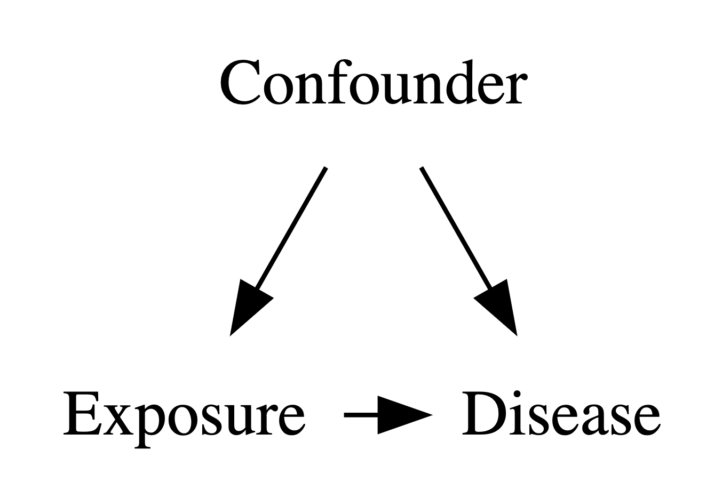

2 Experimental design and confounding
Introduction
In data science, we spend most of our time learning about how to learn from data, and developing models to do just that. We can always develop a model that learns from a dataset, but the way that the data is collected can affect the external validity of the model, i.e., how well the model can generalize to other data sets. We have a innate idea that a good training dataset is, in some ways, representative of the population we want to run future predictions, in order to have a useful predictive model.
The way we collect the data can be important, and can certainly have downstream implications in how we analyze data and how we interpret our results. This is the main reason for design of experiments.
Careful planned collection is much more important if the data is expensive to collect, and we can only collect smaller amounts of data. We have to make the most of the data we have for making our analytic results as strong as possible. In the life sciences and in biomedical contexts, this is the general situation.
Phase III clinical trials are funded by pharmaceutical companies to provide definitive evidence of a drug’s effectiveness. A phase III trial can cost multiple billions of dollars, for testing the drug on perhaps several hundred subjects. Each participant can be subject to multiple expensive tests, costs of transport to clinical centers, treatments to help with side effects and unwanted problems, and other kinds of expenses.
Given the costs per patient, pharmaceutical companies have a strong interest in getting the strongest results possible from the fewest numbers of participants, and a lot of effort goes into designing the trial so that the “treatment effect†can be robustly ascertained, since this is the basis of drug approvals. The trial design goes through multiple iterations within the company, and then needs agreeement from the regulatory agencies like the FDA and EMA, before the trial can go to the field and the first subject enrolled.
With billions of dollars on the line, finding the right patients and the right study design are imperative
Good study design
Most studies are done to to see if an intervention of interest has an effect on some result of interest.
Some Examples
How to collect data to get robust results?
There are several questions we might want to think about when we collect data for finding a result (fairly!!).
- Is the data we’re looking at representative of the population that we are interested in?
- Can we make fair comparisons within the data?
- Can we see robust results using less data?
- Is the data we’re using biased in any way?
What other questions might we address that might guide our data collection?
Biases
The main point here is fairness. We want results that are not subject to intentional and unintentional biases. There are several kinds of biases that we need to be careful of, that we’ll highlight throughout this course. Some of the more common biases are:
- Observer bias which can arise when there are systematic differences between true and recorded values, or this difference depends upon who is collecting the data. This can happen if, for example, a doctor knows the treatment a patient received. Another example might be in how a doctor measures pain levels depending on the race or ethnicity of a patient.
- Selection bias which can arise when how subjects are selected can affect the final inference. For example, if you assign the first 100 patients who come to a hospital on a Friday to one group and a second 100 patients who come to the hospital on Monday to another group, there may be intrinsic differences that may explain any differences you might see that are not related to treatment.
- Confirmation bias, the tendency to interpret information to support a pre-existing idea or notion
- Response bias which occurs when the answers given by a patient are influenced by extraneous factors
- Non-response bias which is seen when there are differences in characteristics of individuals who respond and don’t respond to a survey. This is particularly evident in ratings of products available at an online retailer, for example.
- Recall bias which occurs in retrospective studies where subjects recall their experience depending on their condition. This issue is rampant in nutritional epidemiology where subjects are asked to recall everything they ate in the last week (a 7-day food frequency questionnaire). A simpler example might be where people diagnosed with lung cancer overestimate their tobacco use while healthy people underestimate it.

As the 1948 US Presidential election between Harry Truman, Thomas Dewey and Strom Thurmond unfolded, the Chicago Tribune published the now-infamous headline “Dewey defeats Truman†late on election night. As it turned out, Truman won in a landslide.
This was a result of two kinds of biases – sampling (selection) bias and confirmation bias.
The surveys done to elicit voter responses were done via telephone, which is an efficient way to survey people. Unfortunately, in 1948, telephones were a bit of a luxury and tended to be in wealthier households, who skewed towards Dewey. So the data collected was not representative. Also, surveys were done 2 weeks before the election and so opinions, and votes, changed.
There was also confirmation bias, in that conventional wisdom also was that Dewey would win, and so the writer and analyst Arthur Henning, who penned the article and the headline, stuck to his belief that Dewey would win, and early returns from Republican strongholds appeared to confirm that belief.
Even though the 1948 story was learned from, and polling agencies like Gallup learned to avoid the obvious biases, the 2016 elections brought polling back into the limelight. Post-hoc analyses did consider whether there were sampling biases, but generally it was concluded that the results were within the polls’ margins of error, in that polling results are not deterministic but may be off by a certain fraction. A really nice analysis of the 2020 polling results and the potential for sampling biases was done in The Scientific American.
Other examples os sampling bias are here
Principles
The questions around how to best collect data have generated significant statistical thought, with new contexts giving rise to newer methodologies. As we’ve talked about, a lot of statistical thought was generated from agricultural experiments. R.A. Fisher wrote two of the most influential texts on how to approach these topics in the context of his work at the Rothamstead research facility:
Fisher’s work, and work by others through the early twentieth century, helped develop the following basic principles of experiemental design that allow a researcher to conclude that the results that are seen can be attributed to the treatments under study. They help avoid systematic errors and minimize random errors in order to make strong inferences about the treatment.
We will be looking into how we can “attribute†results to a cause next week.
- Randomization
- Randomly assign subjects to groups to minimize selection bias. The act of randomization creates a natural balance between groups on average and should minimize biases and confounding (add link )
- Local Control
- Control for effects due to factors other than ones of primary interest. This can be done be blocking and stratification, which are both ways of allocating treatment randomly within relatively homogeneous sub-populations. For example, if there are differences in soil fertility across a large field, you want to create smaller blocks where the fertility is relatively constant, and allocate treatments within those blocks.
- Replication
- Repeat the experiment under identical conditions on multiple subjects. The more subjects you include, the lower the variability of your estimates. You can think of this as, the more subjects that exhibit similar behavior, the more confident you are of the results.
The Food and Agriculture Organization (FAO) of the United Nations provides a nice description of these principles
These principles are still used as a first step in designing any study, be it in the medical field, finance, customer analytics, and engineering.
What is a statistical effect?
The
When we think about statistical effect, we usually asssociate it with a statistical test that is used to evaluate whether the effect exists, or is “statistically significant”. Let’s put “significance†aside for the moment.
Let’s look at some examples of test statistics. The 2-sample t-test statistic can be written as
\[ t = \frac{\bar{x}_1 - \bar{x}_2}{\sqrt{\frac{\sigma_1^2}{n_1} + \frac{\sigma_2^2}{n_2}}} \]
Similarly, a test to see if a proportion is different from a particular \(p_0\) is evaluated using
\[ Z = \frac{\hat{p} - p_0}{\sqrt{\frac{p_0(1-p_0)}{n}}} \]
In these examples, and more generally, we see that the test statistic is measuring a signal-to-noise ratio, where the numerator is the signal (difference between groups) and the denominator is the standard error of the estimated signal.
Statistical inference can be considered as a way of seeing if there is sufficient signal in the data to overcome the noise in the data, so the signal rises above the noise, so to speak. So, to find a statistical difference we need to have (a) the signal to be larger, or (b) the noise to be smaller. So, to me, statistics is really about variability; if we can find ways to reduce variability then we have a chance of finding something more than just massive effects. . This is valid not just for testing, but for confidence intervals as well; if there is lower noise, our confidence intervals will be shorter and we can make more precise statements about our estimates
This really informs how we can think about experimental design. Thinking of the estimation problem (confidence intervals and the like), we want our estimate (signal) to be accurate (unbiased), and our variability (noise) to be low. Let’s relate this to the principles. What randomization gives us is minimizing bias,so our estimates are more likely to be unbiased. What local control and replication give us are means to look at estimates within subgroups with lower variance, which in turn reduces the standard error of the estimate. So we can be clever with local control and replication, so appropriate stratification and sufficient number of samples, we can reduce the variability of our estimate and so get more accurate estimates; the randomization piece tries to ensure that the estimates are on target.
In machine learning, you learned about the bias-variance trade-off, in that you can have simple learners that have high bias and low variance, or more complex learners that have low bias and high variance. You try to improve upon this by boosting (reduce bias) and bagging (reduce variance).
For problems of statistical association and causality, we still can use models that have good bias-variance properties, but the study design can help further to get better estimates, and we can account for the particulars of the study design in the models.
The case for replication in statistical hypothesis testing
Classical statistical hypothesis testing, often referred to as Null Hypothesis Significance Testing (NHST), is typically formulated, in it’s simplest form, as
\[ H_0: \theta = \theta_0 \text{ vs } H_1: \theta = \theta_1 \]
We then compute a statistic and a criterion to evaluate if that difference exists. For example, if we are comparing 2 normal distributions with mean \(\mu_1\) and \(\mu_2\) and common known variance \(\sigma^2 = 0.25\), then we can test whether the means are different or not. A simple set of hypotheses can be
\[ H_0: \mu_1 - \mu_2 = 0 \text{ vs } H_1: \mu_1 - \mu_2 = 0.5 \]
If we took \(n\) samples from the first distribution and \(n\) from the second distribution, and computed the sample means from each, the standard t-test would give us a decision rule that we would reject \(H_0\) if
\[ \sqrt{n}(\bar{x}_1 - \bar{x}_2)> z_{1-\alpha} \sqrt{2}\sigma \tag{2.1}\] This should look familiar as a 1-sided t-test, where \(z_{1-\alpha}\) is the \(100\times (1-\alpha)\) percentile of the standard normal distribution (though slightly manipulated to make a point).
There are two kinds of mistakes that we consider in NHST: the type I error (reject \(H_0\) when \(H_0\) is true) and the type II error (do not reject \(H_0\) when \(H_0\) is false). We want to minimize the risk of these errors in our decision-making. This is the basis of the Neyman-Pearson lemma.
Let’s look back at Equation 2.1. If \(\sigma\) is bigger, you need to show a bigger difference in the means to reject \(H_0\). And, for a fixed \(\sigma\), you have a better chance of rejecting \(H_0\) when \(n\) is large. Relating this to the error risks, we will find that the probability of type I error is \(\alpha\) by the way the decision rule is constructed. The idea behind the Neyman-Pearson lemma is that, for a particular type I error, we will minimize the risk for the type II error, or, in other words, maximize the statistical power P(reject \(H_0\) when \(H_0\) is false).
What is power measuring, qualitatively? It is measuring the degree of separation, or lack of overlap, between the sampling distributions of \(\bar{x}_1\) and \(\bar{x}_2\) when there is in truth a difference in means. If there is a lot of overlap, then the signal can’t be seen through the noise and the likelhood that you’ll reject \(H_0\) goes down. If the sampling distributions are separated, then the signal is clear despite the noise and you’re more likely to reject \(H_0\). You can increase your chances that the distributions separate if you can make the standard error of the means (\(\sigma/\sqrt{n}\)), smaller, which can happen if you make \(n\) larger.
In the following snippet, you can play around with m2, s and n to see how statistical power changes. What do you observe?
Need to develop a similar example for the benefits of local control/blocking
Types of study designs
There are several study designs that are commonly used. The choice of study design to use for a particular study can depend on the time needed/available, resources available, degree of definitiveness desired, and, often, convenience.
Observational studies
Observational studies are just that – data is collected as it is observed. The interest is not in seeing particular differences between groups, but in seeing a snapshot of reality that may be indicative of existing differences. The purpose is to observe, not treat, and so what we’re looking for are associations or correlations between variables that we observe.
Observational studies are often the first look into a problem, to see if an intervention might be needed. They generally fall under the umbrella of association studies, and are widely used in epidemilogic studies. Often such studies are designed to find links between some environmental or genetic factor and the risk of some disease, and are crucial to the study of why things might be happening.
- Association of smoking with lung cancer incidence among men
- Association of EGFR mutations with lung cancer and BRCA mutations with breast cancer
Case-control studies
Many of these associations were found by case-control studies, which are retrospective studies. In these studies, we first identify groups of individuals with and without the disease (often in equal numbers), and then observed what fraction of them had the factor of interest (say, EGFR mutations). These are retrospective studies since we are looking back from a time when a disease was caught to see if some exposure or experience was more likely (associated) among people with the disease compared to people without the disease.
Case-control studies are a great design if you’re invesigating an outcome that is rare. For rare outcomes, if you started with a group of people and waited till they got the outcome (got diagnosed with lung cancer), you’d probably wait a long time, and wouldn’t have very many people with the outcome (cases) at the end of it. Instead, you start by finding people who already have the disease, match them with comparable people (think age, sex, ethnicity) who don’t have the disease (controls), and then see how often the exposure of interest happened in each group. You get more subjects with this method when you have a rare outcome, helping us with the replication principle. You also want to have some representativeness of the underlying population, so, once cases and controls are identified, study participants are often selected by random sampling from the population subgroups of cases and controls. If we’re including matched controls (a form of local control by having similar age, sex, race, for example), you randomly select, for each case, 1 or more matched controls.
The main hurdle in creating good case-control studies is in getting a good group of controls that are comparable to the cases and don’t bias your results. Wacholder, et al wrote a series of papers on this subject which form the basis of how controls are selected today.
- You cannot measure the risk of getting a disease if you have a particular exposure from a case-control study. You need additional information from the study population. What do you need?
- You can run machine learning models, in particular classification models, on case-control studies, that will classify subjects into cases and controls given their measured exposures. You can, for most such models, get output on the probability of being of a particular class. Is that probability generalizable to the population, i.e. can you use a ML model to help predict your chance of getting lung cancer?
- We’ll learn more about the ways to establish causality next week. Know, for now, that you cannot ascribe causal relationships directly from a case-control study.
Case-control studies are often summarised using the odds ratio. A case-control study can be described simply with a 2x2 table, where D +/- denotes if a subject has the disease, and E +/- denotes if they have the exposure of interest.
| D+ | D- | Total | |
|---|---|---|---|
| E+ | a | b | |
| E- | c | d | |
| Total |
From this table, the odds ratio is computed as \(ad/bc\), or \((a/c)/(b/d)\), where \(a/c\) is the odds of exposure among the cases and \(b/d\) is the odds of exposure among the controls. For large samples, we can compute the variability of this statistic with the following formula:
\[ var \log(OR) = \frac{1}{a} + \frac{1}{b} + \frac{1}{c} + \frac{1}{d} \]
Provided you have sampled cases and controls in a representative (randomized) manner from the population, you can get estimates of P(E+ | D+) from a case-control study, because the sampling happens conditional on the disease state, but not P(D+ | E+), which is often of interest.
Case-control studies are a more structured form of an observational study compared to just making observations, and so inferences are often stronger.
Cohort studies
Cohort studies are another form of structured observational study. Cohorts, as the name suggests, are groups of individuals collected at a point in time and followed forward in time. For representativeness, cohorts are selected by random sampling from a particular study population. Baseline measurements are taken and then the individuals are followed to see what develops, typically in terms of disease. These studies enable us to understand the natural history and evolution of disease in people, since we can observe their exposures/genetics and then see if they eventually get a disease.
Cohort studies are, by design, much longer in duration, since that time is required for the outcomes of interest to be observed. Many large cohort studies can form definitive associations between exposures and diseae (both due to the large sample size reducing the variability of estimates, and also because we can see cause-and-effect to some degree as we go forward in time), that lead to much better understanding of disease etiology. They can also serve to provide evidence against particular hypotheses. We will see how some cohort studies meet the Bradford-Hill criteria for causality, and so some causality can be inferred from them.
At a basic level, we can also summarise a cohort study with a 2x2 table.
| D+ | D- | Total | |
|---|---|---|---|
| E+ | a | b | |
| E- | c | d | |
| Total |
Yes, this is identical to the earlier table, but the understanding is, here the exposure came first. We can compute and genralize P(D+ | E+), the risk of getting a disease if you are exposed, in a well-designed cohort study. Cohort studies thus often report the risk ratio for an exposure, i.e., P(D+|E+) / P(D+|E-), i.e., how much more likely is one to get the disease if one experienced the exposure of interest, compared to if one didn’t.
One can also compute the odds ratio using the same formula as for case-control studies, and it will have the same interpretation. Why?
\[ OR = ad/bc = (a/c)/(b/d) = (a/b)/(c/d) \]
Logistic regression is a common regression method where you model the prospective incidence of a disease on different exposures over a cohort. This is what logistic regression is primarily designed for.
The duality of the odds ratio as a summary measure for retrospective case-control studies and prospective cohort studies seems to indicate that we should be able to use logistic regression, which computes conditional odds ratios, in either study design. It’s a little trickier with logistic regression, since you are adjusting for other covariates.
It turns out, as shown by Prentice & Pyke (1979), that you can use logistic regression in case-control studies in the same way that you would in a prospective study, and you would get the same odds ratios and asymptotic variance estimates from either design. All that changes is the intercept term in the model, which we ignore anyway.
As we see, we use the odds ratio as a summary measure of association in both cohort and case-control studies. But what really is an odds ratio?
The odds of something is really quite an odd measure, though it is commonly used in gambling. The odds of an getting a disease D if exposed with exposure E is P(D+ | E+) / P(D- | E+). So the more likely an event, the higher the odds of it occurring. But we’re typically used to the probability P(D+|E+), the risk of an event when exposed, not it’s odds. We might like to understand the risk ratio or relative risk of the disease, which is P(D+ | E+) / P(D+ | E-), or the proportional increase in risk when exposed compared to when not exposed. The corresponding odds ratio is P(D+ | E+) P(D- | E-) / p(D+|E-)P(D-|E+). So the odds ratio and risk ratio are not the same! From the 2x2 table, the OR is ad/bc, and the RR is (a/(a+b))/(c/(c+d)).
If you peruse the medical literature, you’ll see lots of odds ratios, mainly because we know how to do logistic regression and the equivalence of the logistic regression results in prospective and retrospective studies. There’s no corresponding regression method for risk ratios, simply because valid risk ratios can’t be computed in retrospective studies. You’ll see, however, that odds ratios are regularly interpreted as risk ratios!. Is this valid? Yes, in special situations. If you have a rare disease (so chances of getting the disease is low, like most cancers), then the odds ratio and risk ratio are roughly the same, and so the interpretation holds. If the rare disease assumption does not hold (like, for example, diabetes), then the odds ratio will overestimate the relative risk.
You might also wonder why, in logistic regression, we get the log of the odds ratio, other than as a mathematical by-product. That mathematics is to make things symmetric, which has computational and interpretation advantages. The log-odds is symmetric around 0, and so positive and negative differences in log-odds are computable and interpretable as equivalent to proportional changes in the odds ratio
Randomized controlled studies
Randomized controlled studies are the gold standard for studies to ascertain causal relationships. They are usually used to evaluate interventions and how they affect an outcome. They use all the principles of good study design to allow definitive conclusions to be made. RCTs randomize individuals to groups, with each such group getting a different intervention. The randomization allows us to balance measured and unmeasured confounders and minimize systematic biases, and allows us to attribute differences in outcomes between groups to differences in treatments.
We will come back to RCTs in more detail in both next week and in Chapter 10.
“Correlation is not causation”, and confounding
Most studies we’ve described will be able to extract correlations or associations between an exposure and disease incidence. But, other than RCTs, we need to be careful that the observed correlations aren’t due to other factors.
There are many examples of spurious correlations that can be found if one tortures data long enough. We will ignore those and focus on situations where the correlations are reasonable. One reason that we might see correlations between variables but no direct causal relationship is due to the presence of a confounder.
- Confounder
- A variable that is associated with both the exposure and the disease, and creates the appearance of a correlation between them.

Confounders are one of the things we have to worry about when we’re assessing associations. And its not just the confounders we measure, it’s also confounders that we didn’t measure. This requires thought, and some critical thinking. This is not necessary an analytic thing, but often requires domain knowledge.
We’ll come back to this next week in more detail. It is one of the foundational issues in assessing causality.
Readings
- Burns, Rohrich & Chung (2011) The Levels of Evidence and their role in Evidence-Based Medicine. https://www.doi.org/10.1097/PRS.0b013e318219c171.
- Howards (2018) An overview of confounding. Part 1: the concept and how to address it. https://www.doi.org/10.1111/aogs.13295
- Howards (2018) An overview of confounding. Part 2: how to identify it and special situations. https://www.doi.org/10.1111/aogs.13293